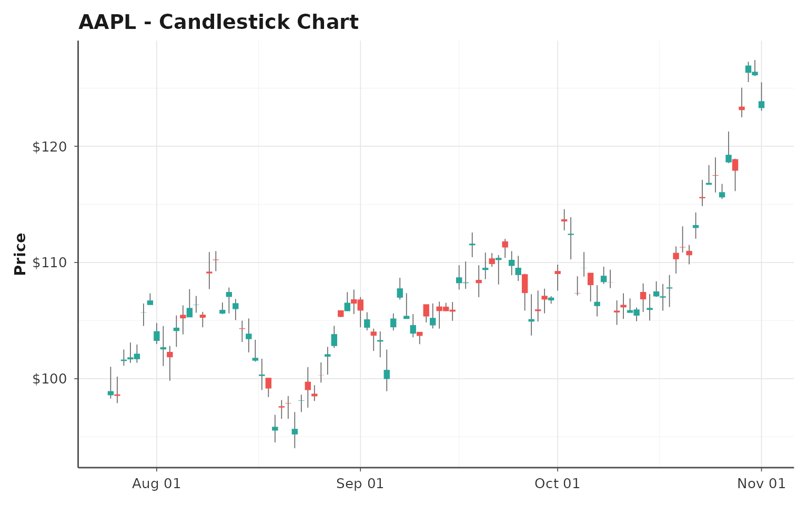
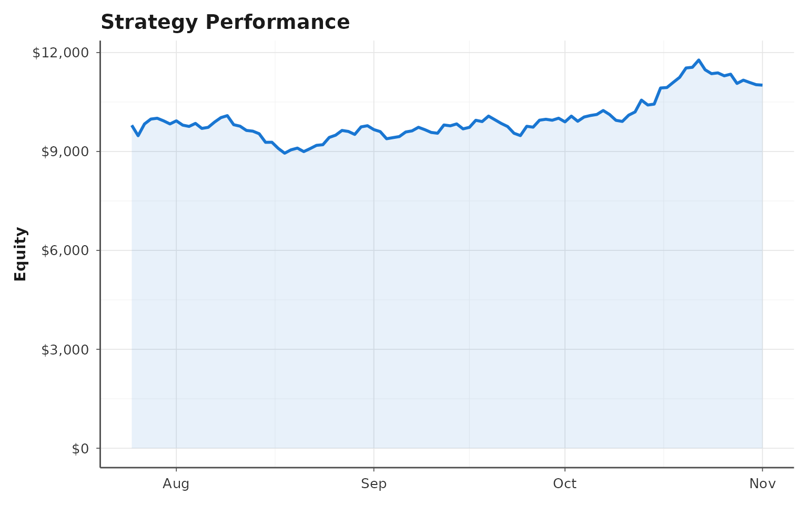
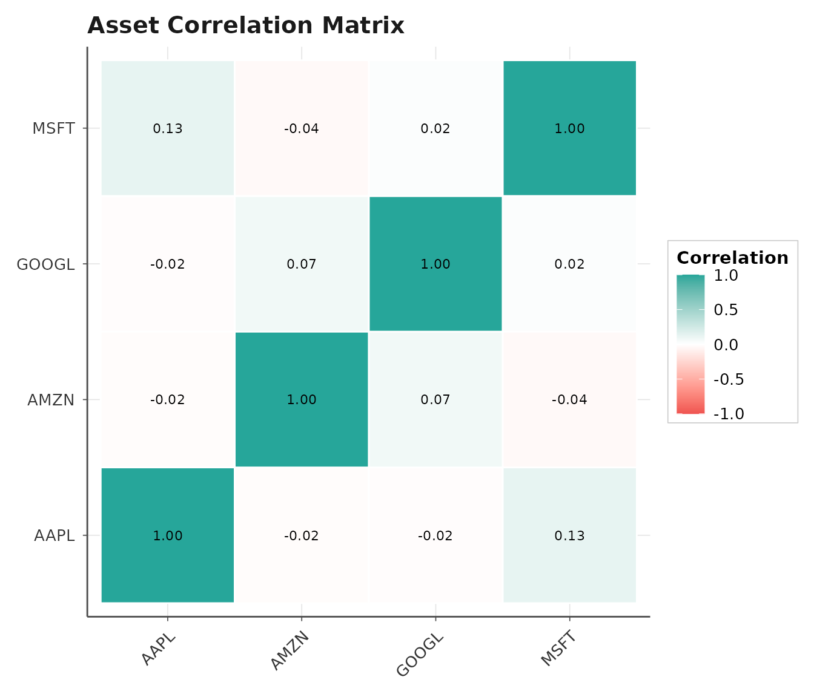

library(tradeviz)
library(dplyr)
#>
#> Attaching package: 'dplyr'
#> The following objects are masked from 'package:stats':
#>
#> filter, lag
#> The following objects are masked from 'package:base':
#>
#> intersect, setdiff, setequal, unionIntroduction
This vignette demonstrates key visualization functions in
tradeviz for trading and investment analysis.
Sample Data
# Create sample OHLC data
set.seed(123)
n <- 100
dates <- seq.Date(Sys.Date() - n + 1, Sys.Date(), by = "day")
# Generate synthetic prices
returns <- rnorm(n, 0.0005, 0.02)
close_prices <- 100 * cumprod(1 + returns)
# OHLC data
sample_data <- tibble(
symbol = "AAPL",
datetime = as.POSIXct(dates),
open = close_prices + rnorm(n, 0, 0.5),
high = pmax(close_prices + abs(rnorm(n, 1, 0.5)), close_prices),
low = pmin(close_prices - abs(rnorm(n, 1, 0.5)), close_prices),
close = close_prices,
volume = rpois(n, 1000000)
)Price Charts
Candlestick Chart
sample_data %>%
plot_candles(title = "AAPL - Candlestick Chart", show_volume = FALSE)
Performance Analysis
Equity Curve
# Create sample equity curve
equity_data <- tibble(
datetime = as.POSIXct(dates),
equity = 10000 * cumprod(1 + rnorm(n, 0.001, 0.015))
)
equity_data %>%
plot_equity_curve(title = "Strategy Performance", drawdown_panel = FALSE)
Risk Analytics
Correlation Heatmap
# Create multi-asset returns
set.seed(456)
cor_data <- data.frame(
AAPL = rnorm(n, 0.001, 0.02),
GOOGL = rnorm(n, 0.001, 0.018),
MSFT = rnorm(n, 0.0008, 0.016),
AMZN = rnorm(n, 0.0012, 0.025)
)
plot_correlation(cor_data, title = "Asset Correlation Matrix")
Conclusion
These examples demonstrate the core visualization capabilities of
tradeviz. All functions support further customization
through standard ggplot2 methods.
For more details, see: - ?plot_candles - Price chart
options - ?plot_equity_curve - Performance
visualization
- ?plot_correlation - Risk analytics -
?theme_trading - Chart styling